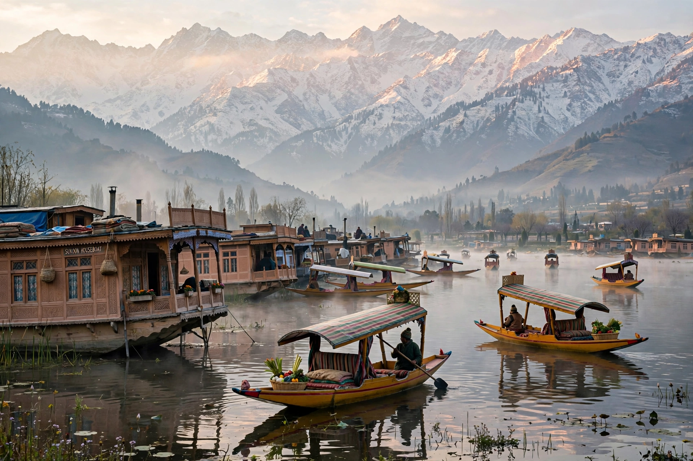

From Wikipedia, the free encyclopedia

| Region | Northern Indian subcontinent, Himalayas and Karakoram |
|---|---|
| Administered by | India, Pakistan and China (in separate parts) |
| Area | Approx. 222,236 km² (whole historical region) |
| Main cities | Srinagar, Jammu, Muzaffarabad, Skardu, Gilgit |
| Languages | Kashmiri, Urdu, Dogri, Ladakhi, Balti, Shina and others |
Kashmir is a region in the north-western part of the Indian subcontinent, encompassing the snowbound valleys and high mountains where the Himalaya and Karakoram ranges meet. Historically the princely state of Jammu and Kashmir, the territory has been disputed since 1947 and is today administered in parts by three countries: India controls the Kashmir Valley, Jammu and Ladakh; Pakistan administers Azad Kashmir and Gilgit-Baltistan; and China controls Aksai Chin and the Trans-Karakoram Tract.
The heart of the region is the Kashmir Valley, a lush intermontane basin watered by the Jhelum River and famed for Dal Lake, its houseboats, saffron fields and chinar trees. Around it stand the Pir Panjal and Great Himalayan ranges; to the north-east, Ladakh is a high-altitude cold desert, and the Karakoram beyond contains K2, the world's second-highest mountain, and some of the longest glaciers outside the polar regions.
Kashmir was an ancient centre of Hindu and Buddhist learning — the home of Kashmiri Shaivism and of the chronicler Kalhana, whose Rajatarangini (12th century) is among India's earliest histories. Islam spread from the 14th century under the Shah Mir dynasty, blending with local traditions in the syncretic culture called Kashmiriyat. The region passed through Mughal (1586), Afghan Durrani and Sikh rule before the Dogra dynasty assembled the princely state of Jammu and Kashmir in 1846 under the Treaty of Amritsar.
At the Partition of India in 1947, the Hindu maharaja Hari Singh's contested accession to India amid a tribal invasion from Pakistan triggered the first Indo-Pakistani war and a UN-mediated ceasefire, leaving the territory divided along what is now the Line of Control. India and Pakistan fought further wars touching Kashmir in 1965 and 1971, and the Kargil War of 1999; an armed insurgency against Indian rule has continued in the Valley since 1989. In August 2019 India revoked the region's special constitutional status (Article 370) and reorganised its administered portion into the union territories of Jammu and Kashmir and Ladakh. The dispute remains one of the world's most militarised, complicated by the fact that all three administering states are nuclear powers.
See also: Kargil War